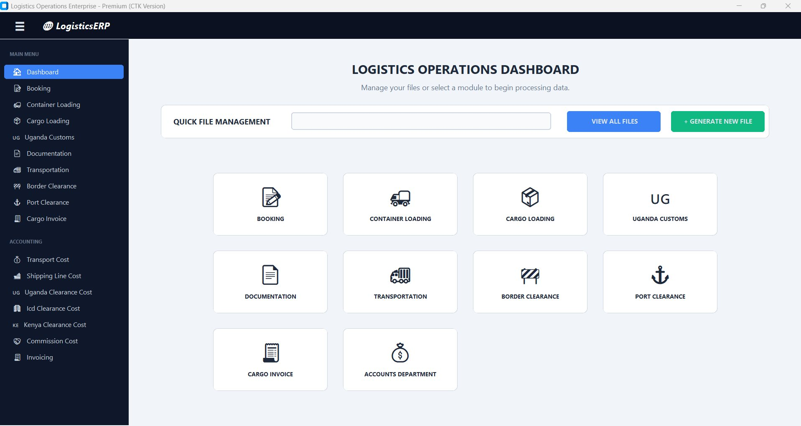

Logistics Operations ERP
One desktop application for the whole shipment lifecycle — every department works on the same File Number, so nobody retypes the same details or hunts through spreadsheets.

Why this needed to exist
A single shipment passes through booking, container loading, cargo, customs, documentation, transport, border and port clearance, costing and invoicing. When each stage lives in its own spreadsheet or paper file, information is scattered, the same data is entered repeatedly, the latest status is hard to find, and accounts has to chase operations for amounts and documents.
What I built
I built a department-oriented desktop app on a shared local database. Each shipment is identified by a unique File Number, and each department gets its own module with search, filtering and a data table. Selected values flow automatically from one module into another and are locked read-only where they were copied, and built-in rules handle calculations and status checks.
What it can do
File Number tracking
One reference ties booking, containers, cargo, customs, documents, transport, costs and invoices together.
Department modules
Booking, Container Loading, Cargo Loading, Uganda Customs, Documentation, Transportation, Border and Port Clearance, Cargo Invoice.
Cross-module autofill
Values carried between modules and locked read-only in the receiving screen to avoid accidental edits.
Built-in rules
Gross weight from tare + net, transport cost totals, coffee quality fields enabled by product name.
Port storage check
Shows no-storage or storage-applicable from the gate-in / gate-out date difference using the configured 15-day rule.
Cost management
Transport, shipping line, Uganda / ICD / Kenya clearance and commission costs in an accounting section.
Invoice status
Invoiced / Invoice Pending indicators and quotation vs invoice amount comparison.
Search, export & print
Filter records, export to Excel and print supported documents as PDF; Admin and Staff roles.
What is built — and what is not
I like being clear about where a project actually stands, so you know exactly what you are looking at.
✅ Built & working
- Dashboard with department cards and quick file management
- Booking, container loading and cargo loading modules
- Customs, documentation, transportation, border and port clearance modules
- Transport, shipping-line, clearance and commission cost screens
- Cargo invoicing with status logic and amount comparison
- Cross-module autofill with read-only locking
- Search / filter, Excel export, PDF printing
- Admin and Staff login roles
🚧 Not built yet
- Centralised multi-user, web or mobile access (currently a local database)
- Live carrier / container-tracking integration
- Password hashing and full audit trail
- Automated backup and restore
Real interfaces, not mockups
Use the numbers / arrows to move through the screenshots. Click the big image to open it full screen.
See it in action
Tech stack
What I learned
- A single shared key (the File Number) makes a many-department workflow manageable.
- Locking autofilled fields prevents quiet data drift between modules.
- A desktop app on SQLite is quick to ship, but multi-user use needs a central database.
Need something like Logistics Operations ERP?
Tell me about your process. I'll reply on WhatsApp with what I would automate and what the first version should include.